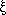

Spline Interpolant PtByPt VI
Owning Palette: Interpolation PtByPt VIs
Requires: Full Development System
Returns an array, Interpolant, of length n.
The array contains the second derivatives of the spline interpolating function g(x) at the tabulated points , where i = 0, 1, …, n – 1.
 | Note By default, reentrant execution is enabled in all Point By Point VIs. |
This VI is similar to the Spline Interpolant VI.
 Add to the block diagram Add to the block diagram |
 Find on the palette Find on the palette |